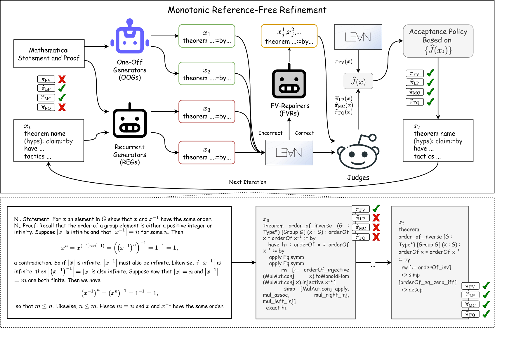
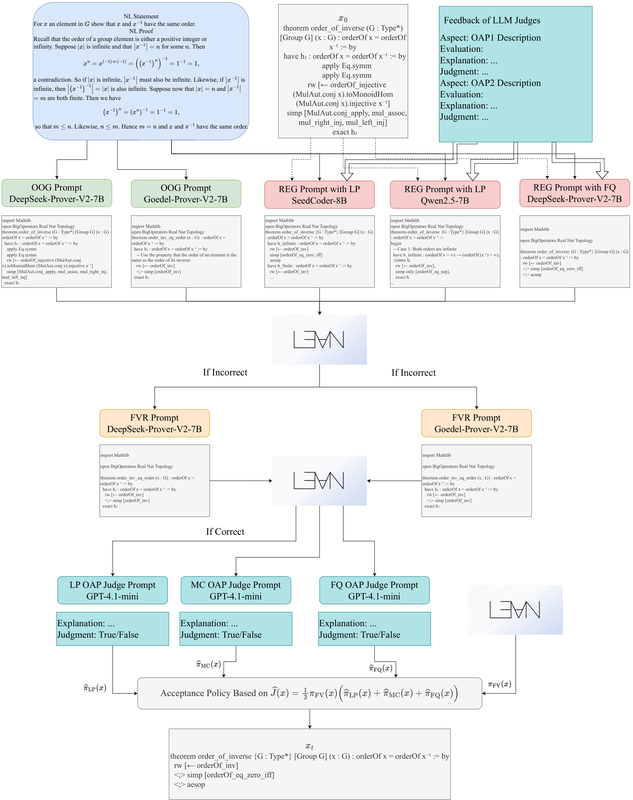

Uses Lean 4 (v4.19.0-rc3 REPL) to check formal validity of generated full-theorem formalizations, with Lean prover LLMs as generators and repairers.
Abstract
While statement autoformalization has advanced rapidly, full-theorem autoformalization remains largely unexplored. Existing iterative refinement methods in statement autoformalization typically improve isolated aspects of formalization, such as syntactic correctness, but struggle to jointly optimize multiple quality dimensions, which is critical for full-theorem autoformalization. We introduce a reference-free iterative monotonic process at inference time for full-theorem autoformalization that leverages complementary feedback from theorem provers and LLM-based judges, without access to ground-truth or existing formalizations and without human intervention. Our approach optimizes a masked composite objective over Formal Validity, Logical Preservation, Mathematical Consistency, and Formal Quality, guided by a responsiveness map that indicates how different LLMs acting as different roles preferentially improve each dimension. We further propose an acceptance policy that guarantees certified monotonic improvement, and provide conditions ensuring convergence and termination. Empirical experiments demonstrate the proposed process enables simultaneous improvement across multiple dimensions, achieving 100.00% formal validity and a 90.27% overall score on miniF2F, and 77.96% formal validity and a 52.45% overall score on ProofNet.
Problem
Most autoformalization work targets theorem statements and leaves proofs as "sorry" placeholders, so full-theorem autoformalization (statement plus proof) is largely unexplored. Existing iterative refinement methods improve single quality aspects and struggle to optimize several dimensions jointly.
Approach
Full-theorem autoformalization is treated as one task scored on Formal Validity, checked by the Lean 4 REPL, and on Logical Preservation, Mathematical Consistency and Formal Quality, scored by LLM judges. At each step, one-off generators, recurrent refiners driven by judge feedback, and FV-repairers (DeepSeek-Prover-V2, Goedel-Prover-V2, Seed-Coder, Qwen2.5) propose candidates. A responsiveness map assigns models to these roles. A masked composite objective and an acceptance policy based on lower confidence bounds keep improvements certified as monotonic, with conditions given for convergence and termination.

Figure 1 : Schematic illustration of the monotonic process with an example. In this process, One-Off Generators (OOGs) produce formalizations from scratch, Recurrent Generators (REGs) refine the current best formalization using feedback from LLM judges, and FV-Repairers (FVRs) correct formally invalid candidates generated by OOGs and REGs. The acceptance policy retains only the formalization estim
Results
After six reference-free iterations, the process reaches 100.00% formal validity and a 90.27% overall score on miniF2F-Test. On ProofNet-Test it reaches 77.96% formal validity and a 52.45% overall score, improving several dimensions at once.

Figure 7 : Illustrative example of a single step in the monotonic process. The monotonic process enables the construction of high-quality formalizations that are both formally valid, as verified by the theorem prover, and semantically aligned, as evaluated by LLM judges.